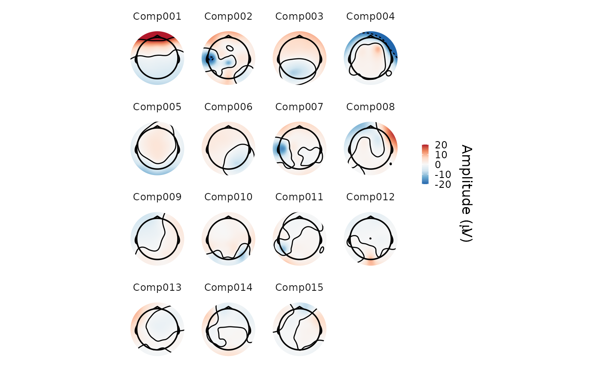

5. Removing artifacts
2022-12-13
Source:vignettes/v5-removing-artifacts.Rmd
v5-removing-artifacts.RmdüéØ GOALS
Removing large artifacts due to blinks and/or eye movement from the epoched EEG.
5.2 Independent component analysis
- Independent component analysis (ICA) = a statistical technique to separate a multivariate signal (e.g., EEG recordings from different channels) into a number of additive sub-components

Figure: Decomposing a signal into statistically independent components.1
- Mathematical details are beyond our scope here, but there are many excellent tutorials (e.g., 2)
n_components <- 15
ica <- run_ICA(dat_epo, method = "fastica", pca = n_components)## Reducing data to 15 dimensions using PCA.## Running fastica (ica).-
Plot scalp distributions of the extracted ICA components:
Eye-blink and vertical vertical eye movement components: very strong signal at the forehead (
Comp001)Vertical eye movement components: Opposite polarities left-frontal versus right-frontal (maybe
Comp008and/orComp009)

- Automatically detect “bad” components based on their correlation with the electroocoulogram (EOG):
heog <- c("HEOG_left", "HEOG_right")
veog <- c("FP2", "VEOG_lower")
(bad_components <- ar_eogcor(ica, dat_epo, heog, veog))## Estimated HEOG threshold: 1## Estimated VEOG threshold: 1.06## character(0)- Components #8 (HEOG) and #9 (VEOG) are clear outliers but not above the automatic threshold → Need to adjust the threshold:
heog <- c("HEOG_left", "HEOG_right")
veog <- c("FP2", "VEOG_lower")
(bad_components <- ar_eogcor(ica, dat_epo, heog, veog, threshold = 0.6))## [1] "Comp001" "Comp009"- Remove “bad” ICA components from the actual (epoched) data:
dat_icacorr <- apply_ica(dat_epo, ica, comps = bad_components)- Define helper functions to compare uncorrected and corrected epochs visually:
extract_epoch <- function(epochs, epoch_no, electrode) {
epoch_ixs <- epochs$timings$epoch == epoch_no
data.frame(
time = unique(epochs$timings$time),
amplitude = epochs$signals[epoch_ixs, electrode][[1]]
)
}
compare_epochs <- function(uncorr_epochs,
corr_epochs,
epoch_no,
electrode) {
require(ggplot2)
n_samples <- length(unique(uncorr_epochs$timings$time))
epochs <- list(uncorr_epochs, corr_epochs) |>
lapply(extract_epoch, epoch_no, electrode) |>
do.call(what = "rbind")
epochs$type <- rep(c("uncorrected", "corrected"), each = n_samples) |>
factor(levels = c("uncorrected", "corrected"))
ggplot(epochs, aes(x = time, y = amplitude, color = type)) +
geom_line() +
labs(x = "Time (s)", y = "Amplitude (µV)", color = NULL) +
ggtitle(paste0("Epoch #", epoch_no, ", channel ", electrode)) +
theme_minimal()
}
compare_epochs(dat_epo, dat_icacorr, epoch_no = 103, electrode = "FP1")## Loading required package: ggplot25.3 Artifact rejection
ICA may not be able to correct all eye movements + other artifacts
Additionally reject (i.e., throw away) all epochs where at least one channel exceeds an absolute voltage threshold (e.g., ± 100 µV)
# remotes::install_github("alexenge/eegUtils@fix-ar_thresh-reject")
dat_rej <- ar_thresh(dat_icacorr, threshold = c(100, -100), reject = TRUE)## 640 (0.05%) samples above 100 uV threshold.## 318 (0.02%) samples below -100 uV threshold.## 9 epochs contain samples above threshold.## Removing 9 epochs.
Figure: According to a famous ERP textbook3, “sometimes the best artifact correction is no artifact correction” (i.e., rejection only).4
Choose threshold carefully → Rejecting many epochs reduces statistical power
More sophisticated thresholding approaches exist (e.g., moving window)
Save artifact-corrected epochs for later:
Further reading
Luck, S. J. (2014a). Chapter 6: Artifact rejection and correction. In An Introduction to the Event-Related Potential Technique (2nd ed., pp. 185–217). MIT Press.
Luck, S. J. (2014b). Chapter 6 Supplement: A closer look at ICA-based artifact correction. In An Introduction to the Event-Related Potential Technique (2nd ed.). MIT Press. Open access link
Add-on topics
5.4 Multiple source eye correction
Multiple source eye correction (MSEC) = a semi-automatic algorithm to model and correct eye blinks and eye movements
Explicitly models the dipole sources of the eye movements (unlike ICA)
Requires manual annotation of “true” eye blinks and eye movements, ideally from independent calibration data
Available in a commercial software package (BESA)
Creates a correction matrix that – via matrix multiplication – removes eye movements from the actual data
5.5 Regression
Much simpler approach than ICA and MSEC: Remove EOG from scalp channels using linear regression
Problematic: EOG channels may contain or correlate with brain activity
dat_eogreg <- ar_eogreg(dat_epo, heog, veog)
compare_epochs(dat_epo, dat_eogreg, epoch_no = 103, electrode = "FP1")